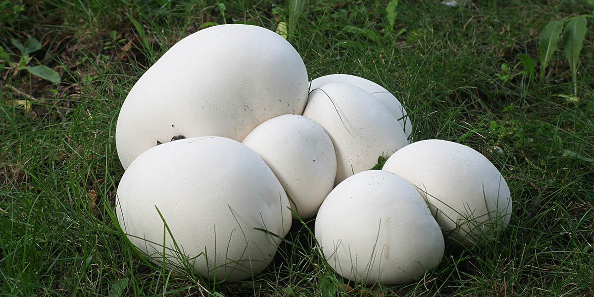

Puffball Facts!
Puffball Facts!

Also known as the Giant Puffball Mushroom these bad boys can weigh up to 44 pounds. However, if you see them in use they will be small as that is the best time to use them for cooking.
Once they become yellow or brown they create pores which upset the stomach.
Overall, they have a solid white interior while others are usually yellow on the inside.
If allowed to grow fully they will explode and drench the area in their spores!